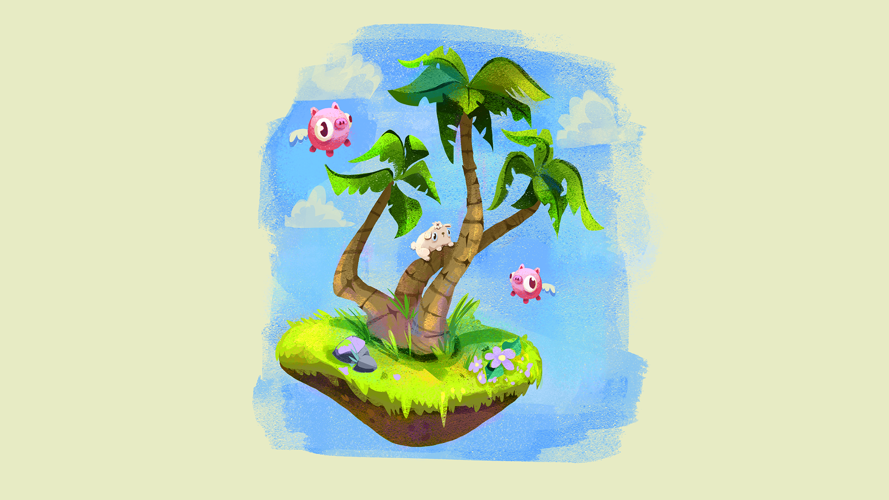
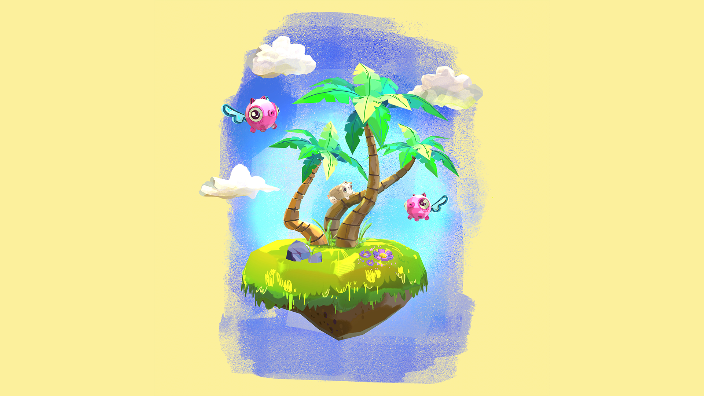
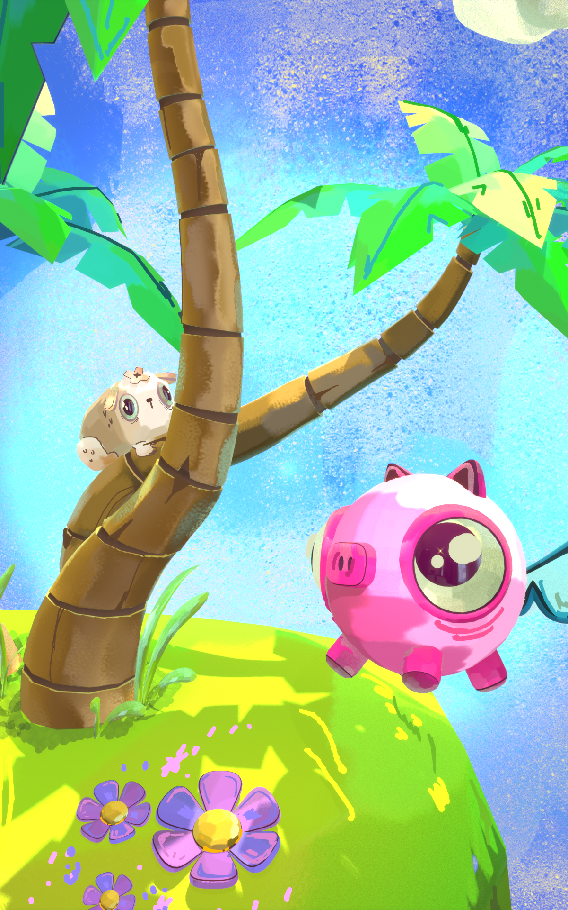
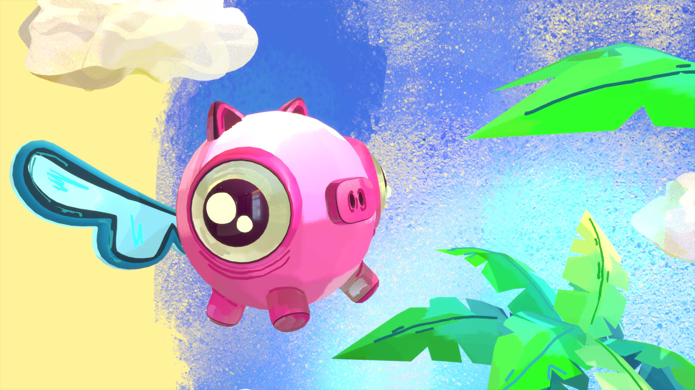
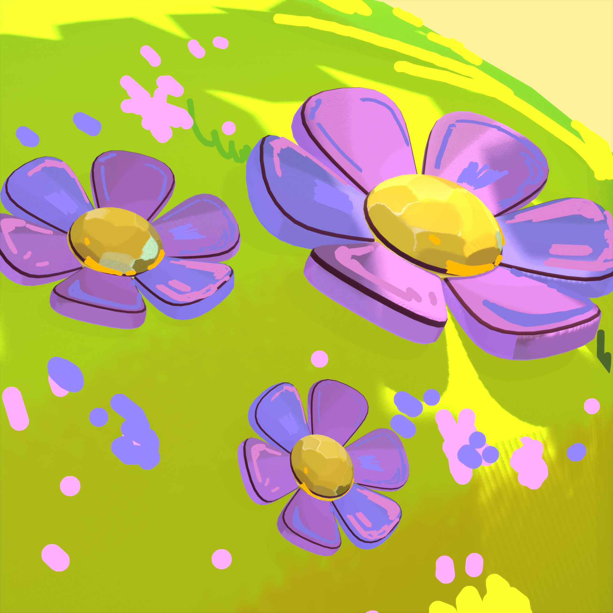
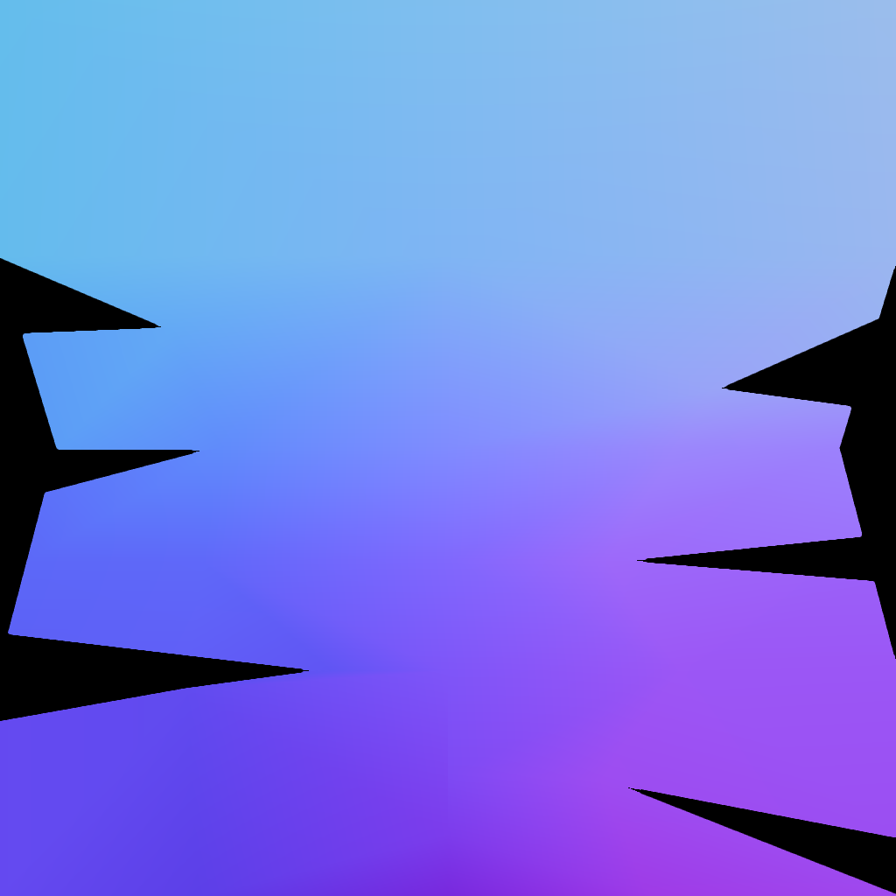
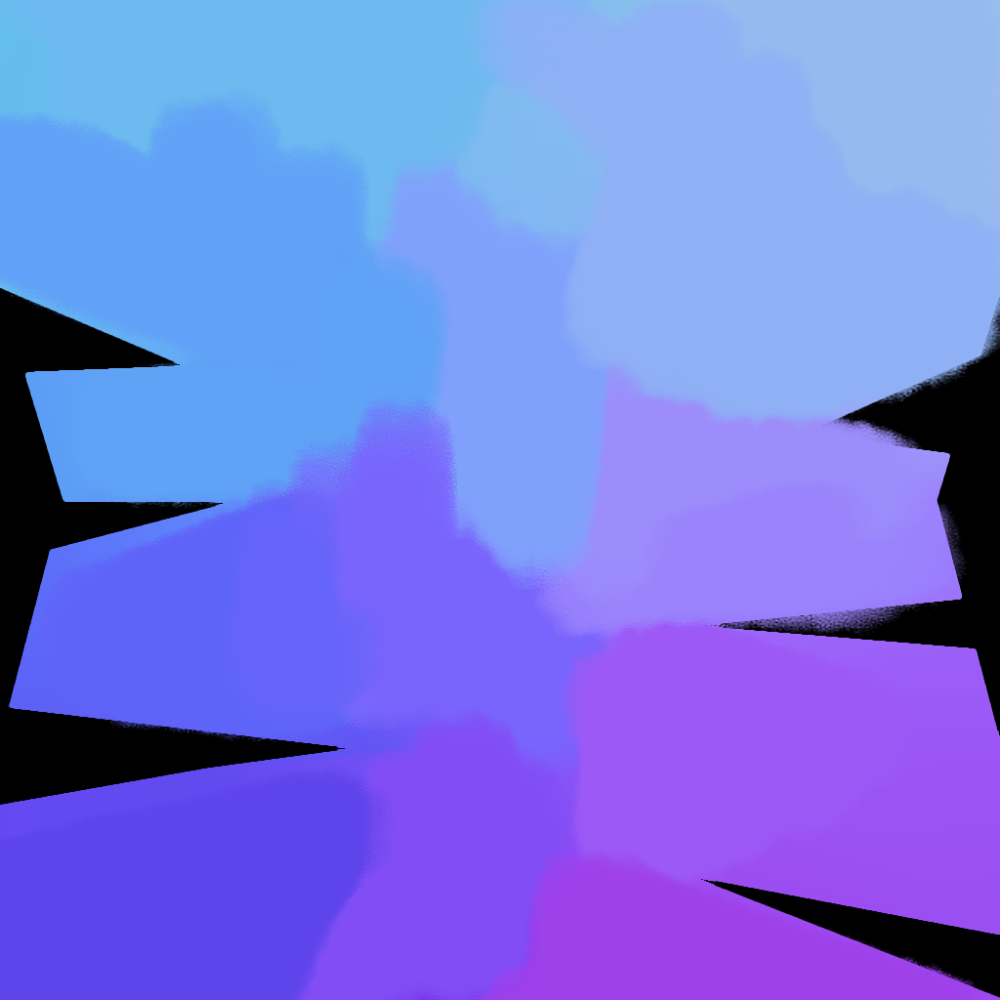
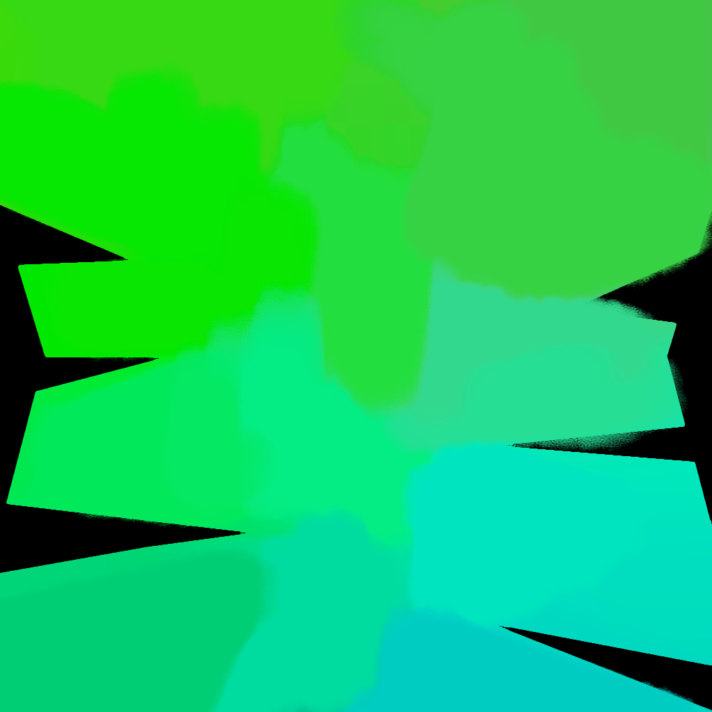
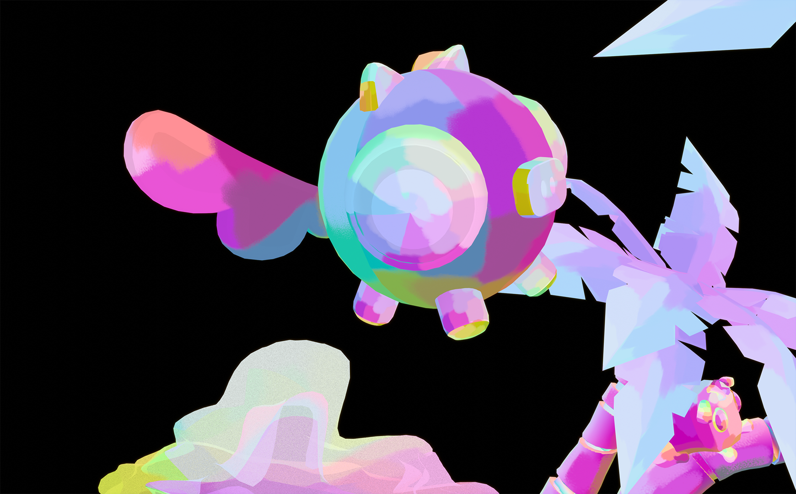
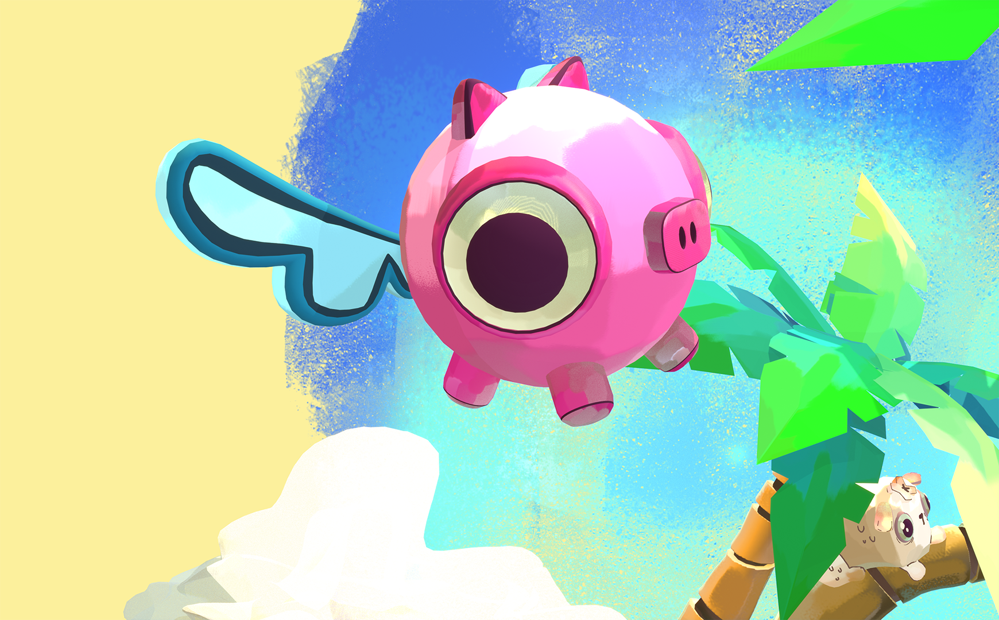

Pig Island portraits a glimpse of a universe in which my beloved dog lives after passing away. In is world, Mostrololo enjoys the tranquility of warm breeze surrounded by palm trees, protected by couple of guardians. The look development consists on handpainted textures and line art that turn every camera angle into a small painting.
01. visual development & detail
Developed a 2D concept art that helped to create the 3D environment in Blender. The rounded shape language and painterly shaders create a friendly and soft atmosphere.



02. 3d models
03. shaders & textures



To achieve the painterly look, I applied a technique that consisted on painting over the Normal Map using an impresionistic brushwork. This approaches changes the appeareance of objects, creating the illusion that each brushtroke is a distinct facet of the model's geometry
04. line art



Creating line art was the most fun part of the visual development process, using one of my favorite features in Blender: grease pencil. During this stage, I painted strokes directly on the 3D models specially to define edges like I would do with a 2D illustration to break symmetry and add organic details
05. animation
As a final touch, animated the lineart which creates a more lively scene. The purpose behind the animation was to bring 2D feature like lineart into the dynamic space of a 3D enviroment. In my work I consistently seek to explore and integrate different techniques that interest me.